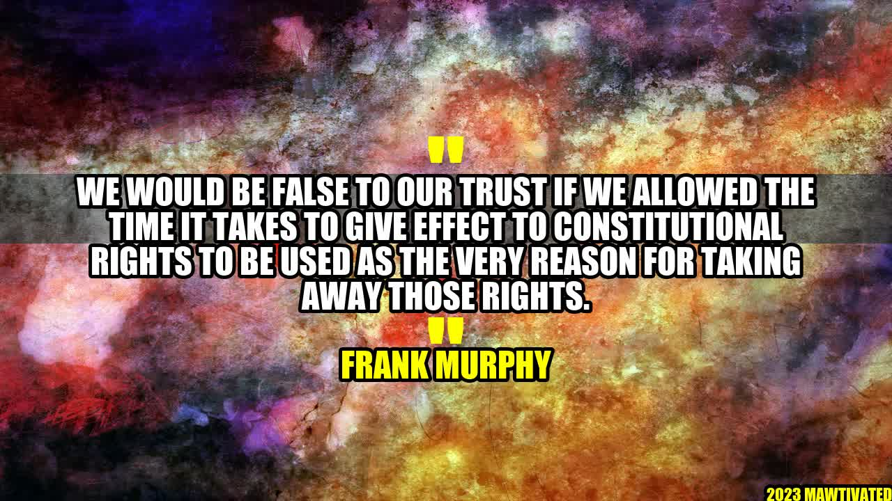

Protecting Constitutional Rights: The Importance of Standing Firm

Frank Murphy was a man of integrity and courage who stood up for what he believed in, even when it was difficult. As an Associate Justice of the Supreme Court of the United States from 1940 to 1949, he was known for his commitment to protecting constitutional rights. His words still resonate today: "We would be false to our trust if we allowed the time it takes to give effect to constitutional rights to be used as the very reason for taking away those rights."
The Need to Protect Our Rights
It is easy to take our constitutional rights for granted, but history has shown us time and time again that they can be threatened and even taken away. From the internment of Japanese Americans during World War II to the current debate over immigration policy, we see that our rights are not always guaranteed.
That is why it is so important to stand firm in protecting our rights, even when it may be difficult or unpopular to do so. We must remember that these rights are not just words on a piece of paper, but represent the values and principles that make our country great.
Examples of Constitutional Rights in Action
There are countless examples of people standing up for their constitutional rights throughout history, and here are just a few:
- Rosa Parks refusing to give up her seat on a bus, leading to the Montgomery Bus Boycott and ultimately desegregation of public transportation.
- Fred Korematsu fighting against the internment of Japanese Americans during World War II, even though it meant risking his own freedom.
- The LGBTQ+ community fighting for marriage equality and the right to live without discrimination.
These examples show us that protecting our rights is not just a legal issue, but a moral imperative. It takes courage to stand up and fight for what is right, but it is a necessary part of maintaining our freedoms.
Conclusion: 3 Key Points
- Our constitutional rights are not guaranteed: While we may take them for granted, history has shown us that our rights can be threatened at any time.
- We must stand firm in protecting our rights: It takes courage and commitment to fight for our rights, but it is necessary to preserve the values and principles that make our country great.
- Examples show us the importance of protecting our rights: Rosa Parks, Fred Korematsu, and the LGBTQ+ community are just a few of the many people who have inspired us with their commitment to protecting our constitutional rights.
Where to Go From Here
If you are interested in protecting constitutional rights, there are many ways to get involved. You can:
- Join or support organizations that work on legal and advocacy issues related to constitutional rights, such as the American Civil Liberties Union (ACLU).
- Contact your elected representatives to express your concerns about issues that may affect your rights.
- Stay informed about important legal and policy developments related to constitutional rights.
SEO Keywords
- Constitutional rights
- Advocacy
- Legal issues
- Values and principles
- Rosa Parks
- Fred Korematsu
- LGBTQ+
Category
Legal and Advocacy
Curated by Team Akash.Mittal.Blog
Share on Twitter Share on LinkedIn